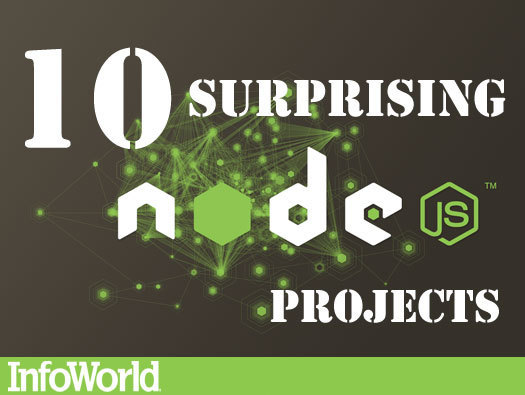
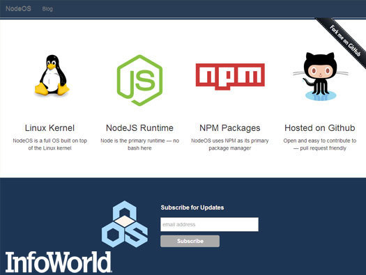
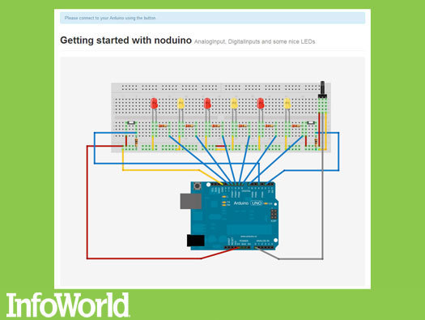
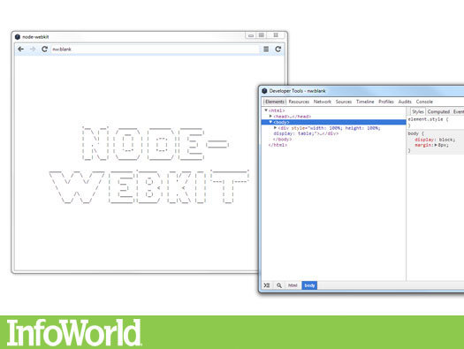
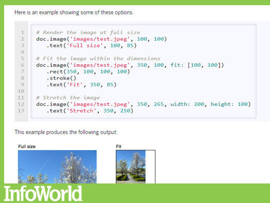
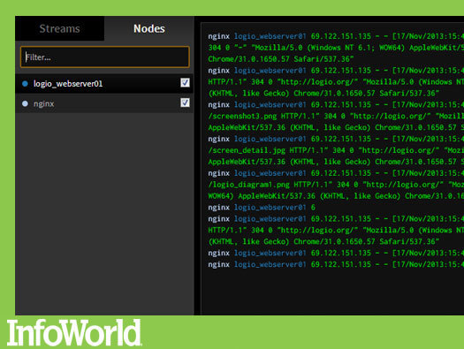
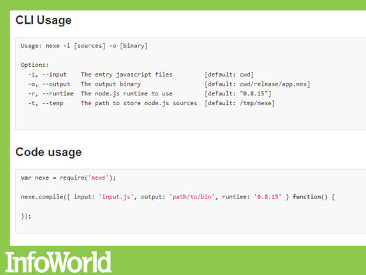
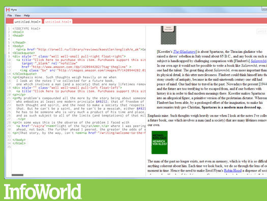
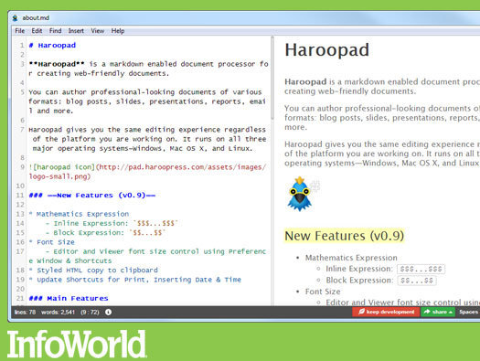
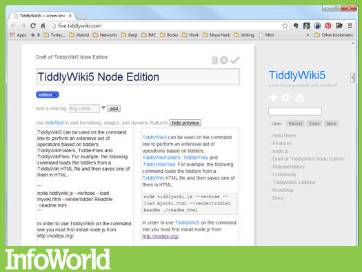

Node.js: More than websites

In only a few years since its original release, Node.js — the server-side JavaScript engine — has gone from being a curiosity derived from Google Chromium’s V8 to a full-blown platform in its own right. Engineers for high-traffic websites like PayPal have written exuberantly about how Node.js makes it easy to create fast-moving Web frameworks.
But Node.js isn’t just a Web stack — it’s a technology coming into its own in many different respects. Here’s a collection of projects that use Node.js for server monitoring, for media streaming, for remote control, for desktop and mobile apps, and in other ways that don’t confine it to the usual role of Web server — or even to the server at all.
NodeOS

This ambitious project from Jacob Groundwater fashions a new environment around the Linux kernel, where Node.js is the “shell” and Node’s npm is used as the system package manager. Right now the first releases of iNodeOS are being built in top of Docker and Vagrant — good because early builds can be easily shared, forked, and iterated, but not so good because of the number of hoops to be jumped through in order to have a working system.
But the core premise of the project is fascinating. Imagine using Node.js not just for package management but for scripting, interfaces, and most everything else as well.
Noduino

Hardware hackers who want to control their Arduino via a Web page are in luck. Noduino lets you access an Arduino over either WebSockets or a serial connection. This project is just getting started, but driving the LED modules on the board, capturing events from the Arduino (such as button pushes), and other common functions are all supported.
Node-WebKit

A runtime for Node.js apps, Node-WebKit lets you package said apps with a stripped-down copy of Chromium and deliver them on any platform where Node.js and Chromium have been ported (Linux, Mac OS X, and Windows, for now). The packaging process couldn’t be simpler. You zip up a copy of your Node.js application, add a manifest, and you’re done. You even have access to the app window’s menus and other platform-native behaviors via Node.js methods and objects.
Cross-platform application deployment has never been easy. A way to build desktop applications with Web technologies, Node-WebKit might well be an alternative to bigger, more cumbersome frameworks.
PDFKit

A PDF document creation library for Node.js, PDFKit lets you generate PDFs using an “HTML5 canvas-like API” for creating vector graphics and support for font embedding. Many standard PDF features, like document security and table creation, are still in the works, but text wrapping, bulleted lists, highlights, and annotations are all here. Note that PDFKit is best for producing PDFs from scratch rather than as a document-conversion system. If you want to manipulate existing PDFs, you might be best off using another Node project called Scissors.
Log.io

Node.js is both wicked fast and Web enabled — two features you might want in a monitoring tool. Enter Log.io, a real-time log monitoring system that uses the Socket.io library to send reports of activity directly into your browser. There is no persistence layer. Any changes in watched log files are forwarded immediately to the server, then over to you. What’s more, adding a third-party harvester to the system involves nothing more than sending a properly formatted log message to the server’s listening TCP interface.
Nodecast or Leapcast
Google’s Chromecast has inspired no fewer than two Node.js applications that allow you to direct mobile-based videos and music to a PC. Run Nodecast or Leapcast on a PC, fire up your mobile device, select an app that supports Chromecast, and you’ll be able to broadcast content from the mobile to the computer. Of the two, Nodecast is the far less complex, if also less functional. It has only been tested with YouTube and Google Music. (Check out a demo.) Nodecast is not to be confused with the Nodecast library, which provides connectivity to devices (like the Chromecast) that use the DIAL discovery protocol.
Nexe

One of those tiny but immensely useful tools for Node.js, Nexe is a utility for creating a single executable out of a Node.js app. The results can be run without a separate installation of the Node.js runtime, so nontechnical end-users don’t need to mess around with all the dependencies required to run your Node.js app. (Obviously this is most useful if you’re distributing a Node.js app that has no GUI; for GUI apps, try the likes of Node-WebKit.) One big downside: Nexe doesn’t yet work with Windows (only Linux and Mac OS X), and it doesn’t support native Node.js modules either.
Hyro

One example of an application that can be built with Node-WebKit is Hyro, a real-time HTML5 editor. Raw HTML is displayed on the left-hand side of the page and the resulting content on the right. Syntax highlighting is provided by CodeMirror. Hyro isn’t intended to be a full-blown Web IDE, but more like a lightweight notepad for jotting HTML or CSS. In that respect, it’s a great example of how Node.js can be used to power a modest, tightly focused application with little heavy lifting involved.
Haroopad

Another packaged Node.js app that uses Chromium as its UI, Haroopad lets you type in Markdown-flavored text, and it generates HTML. Editing and viewing take place in side-by-side windows that scroll in sync and are updated in real time. Documents can also be emailed as HTML or Markdown, a convenient way to post to Tumblr or add to Evernote without needing a plug-in. Speaking of which, here’s hoping the Haroopad developers add a plug-in architecture. There’s a lot of room to expand a program like this. They’re already working on the ability to export to multiple formats, although HTML is currently the only one supported.
TiddlyWiki5

A personal favorite project, the cumbersomely named but endlessly versatile TiddlyWiki is a wiki system that runs from a single HTML file and can work either locally, without any network connection at all, or on a Web server. The completely redesigned version 5 can integrate directly with Node.js to unlock a whole slew of features not available when running in stand-alone mode. TiddlyWiki5 is still in beta as of this writing, but it’s set to make point release by the end of the year.
Reprinted from infoworld.com